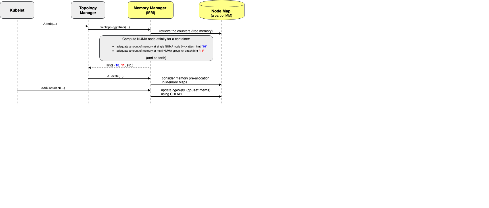

Feature state:
Stable since Kubernetes v1.32; enabled by default
(MemoryManager)
The Kubernetes Memory Manager enables the feature of
guaranteed memory (and hugepages) allocation for pods in the
Guaranteed QoS class.
The Memory Manager employs a hint generation protocol to yield the most suitable NUMA affinity for a pod. The Memory Manager feeds the central manager (Topology Manager) with these affinity hints. Based on both the hints and Topology Manager policy, the pod is rejected or admitted to the node.
Moreover, the Memory Manager ensures that the memory which a pod requests is allocated from a minimum number of NUMA nodes.
For background about memory resources for Pods, read Assign Memory Resources to Containers and Pods.
Before you begin
You need to have a Kubernetes cluster, and the kubectl command-line tool must be configured to communicate with your cluster. It is recommended to run this tutorial on a cluster with at least two nodes that are not acting as control plane hosts. If you do not already have a cluster, you can create one by using minikube or you can use one of these Kubernetes playgrounds:
Your Kubernetes server must be at or later than version v1.32. To
check the version, enter kubectl version. If you are
running an older version of Kubernetes, check the documentation for the
version of Kubernetes you are running.
Resource alignment prerequisites
To align memory resources with other requested resources in a Pod spec:
- the CPU Manager should be enabled and proper CPU Manager policy should be configured on a Node. See control CPU Management Policies;
- the Topology Manager should be enabled and proper Topology Manager policy should be configured on a Node. See control Topology Management Policies.
Windows support
Feature state:
Alpha since Kubernetes v1.32; disabled by default
(WindowsCPUAndMemoryAffinity)
Windows support can be enabled via the
WindowsCPUAndMemoryAffinity feature gate and it requires
support in the container runtime.
Only the None and BestEffort policies are supported on
Windows.
How does the Memory Manager operate?
For Linux nodes, the Memory Manager offers the guaranteed memory (and
hugepages) allocation for Pods in Guaranteed QoS class. To immediately
put the Memory Manager into operation follow the guidelines in the
section Memory Manager
configuration, and subsequently, prepare and deploy a
Guaranteed Pod as illustrated in the section Placing a Pod in the
Guaranteed QoS class.
The Memory Manager is a hint provider, and it provides topology hints
for the Topology Manager which then aligns the requested resources
according to these topology hints. On Linux, it also enforces
cgroups (specifically, cpuset.mems) for Pods.
The complete flow diagram concerning pod admission and deployment
process is illustrated below:

During this process, the Memory Manager updates its internal counters stored in [Node Map and Memory Maps][2] to manage guaranteed memory allocation.
The memory manager activates during kubelet startup if a node
administrator configures reservedMemory for the kubelet
(section Reserved memory
configuration). In this case, the kubelet updates its node map to
reflect this reservation.
When the Static policy is configured, you
must configure reserved memory for the node (for
example, with the reservedMemory configuration field in the
kubelet configuration).
An important topic in the context of Memory Manager operation is the management of NUMA groups. Each time pod's memory request is in excess of single NUMA node capacity, the Memory Manager attempts to create a group that comprises several NUMA nodes and that features extended memory capacity.
Memory Manager configuration
Other Managers should already be configured (see resource alignment
prerequisites. Set the memoryManagerPolicy
configuration field within the kubelet
configuration, to the name of your chosen policy.
Optionally, some amount of memory can be reserved for system or kubelet processes to increase node stability (section Reserved memory configuration).
Policies
Kubernetes' memory manager provides three policies. You can select a
policy via the memoryManagerPolicy configuration field in
the kubelet configuration; the values available in Kubernetes 1.37
are:
None(default)Static(Linux only)BestEffort(Windows only)
None policy
This is the default policy and does not affect the memory allocation in any way. It acts the same as if the Memory Manager is not present at all.
The None policy returns default topology hint. This
special hint denotes that Hint Provider (Memory Manager in this case)
has no preference for NUMA affinity with any resource.
Static policy
Feature state:
Stable since Kubernetes v1.32; enabled by default
(MemoryManager)
This policy is only supported on Linux.
In the case of the Guaranteed pod, the
Static Memory Manager policy returns topology hints
relating to the set of NUMA nodes where the memory can be guaranteed,
and reserves the memory through updating the internal [NodeMap][2]
object.
In the case of the BestEffort or Burstable
pod, the Static Memory Manager policy sends back the
default topology hint as there is no request for the guaranteed memory,
and does not reserve the memory in the internal [NodeMap][2] object.
This policy is only supported on Linux.
BestEffort policy
Feature state:
Alpha since Kubernetes v1.32; disabled by default
(WindowsCPUAndMemoryAffinity)
This policy is only supported on Windows.
On Windows, NUMA node assignment works differently than Linux. There is no mechanism to ensure that Memory access only comes from a specific NUMA node. Instead the Windows operating system scheduler selects the most optimal NUMA node based on the CPU(s) assignments. It is possible that Windows might use other NUMA nodes if the Windows scheduler deems them optimal.
The policy does track the amount of memory available and requested
through the internal node map. The memory manager makes a best
effort at ensuring that enough memory is available on a NUMA node before
making a resource assignment.
This means that in most cases memory assignment should function as
specified.
Reserved memory configuration
As an administrator, you can configure the total amount of reserved memory for a node. This pre-configured value is subsequently utilized to calculate the real amount of node allocatable memory available to pods.
The Kubernetes scheduler incorporates allocatable memory information to optimise pod scheduling. . The node allocatable mechanism is commonly used by node administrators to reserve K8s node system resources for the kubelet or operating system processes to help assure node stability.
The relevant kubelet settings include kubeReserved,
systemReserved and reservedMemory. The
reservedMemory setting allows you to split the total
reserved memory and assign it across many NUMA nodes.
You specify a comma-separated list of memory reservations, of different memory types, per NUMA node. You can also specify reservations that span multiple NUMA nodes, using a semicolon as separator.
The Memory Manager will not use this reserved memory for running container workloads.
For example, if you have a NUMA node "NUMA0" with 10GiB of memory
available, and you configure reservedMemory to reserve
1Gi (of memory) for NUMA0, the Memory Manager assumes that
only 9GiB is available for pods.
You can omit this parameter, however, you should be aware that the quantity of reserved memory from all NUMA nodes should be equal to the quantity of node allocatable memory.
If at least one node allocatable parameter is non-zero, you will need
to specify reservedMemory for at least one NUMA node. In
fact, the evictionHard threshold value is equal to
100Mi by default, so if you use the Static
policy, specifying reservedMemory is obligatory.
Memory manager reserved memory syntax
Here are some examples of how to set the reservedMemory
configuration for the kubelet.
# Example 1
reservedMemory:
- numaNode: 0 # NUMA node index
limits:
memory: "1Gi" # byte quantity
- numaNode: 1
limits:
memory: "2Gi" # byte quantity # Example 2
reservedMemory:
- numaNode: 0
limits:
"memory": "512Gi"
- numaNode: 1
limits:
"memory": "512Gi"
"hugepages-1Gi": "2Gi" # only relevant on LinuxConstraints on NUMA memory reservation
When you specify values for reservedMemory, this must be
compatible with the kubeReserved and
systemReserved values that are in effect, along with any
memory.available setting you make as part of
evictionHard.
\begin{equation*}
\sum_{ \textnormal{i} = 0}^{ \textnormal{node count}} { \textit{reservedMemory} [ \textnormal{i} ]} = \textit{kubeReserved} + \textit{systemReserved} + \textit{evictionHard} \, \boxed{\textnormal{memory.available}}
\end{equation*}\\\
\text{where i is an index of a NUMA node}If you do not follow the formula above, the Memory Manager will show an error on startup.
In other words, the example 1 (above) illustrates that for the
conventional memory (type=memory), Kubernetes reserves 3GiB
in total; that is:
\begin{equation*}
\sum_{ \textnormal{i} = 0}^{ \textnormal{node count}} \textit{reservedMemory}_{ [ \textnormal{i} ] } = \underbrace{\textit{reservedMemory} [ 0 ] + \textit{reservedMemory} [ 1 ] }_{\textnormal{type=memory}}
= 1 \textnormal{GiB} + 2 \textnormal{GiB}
= 3 \textnormal{GiB}
\end{equation*}\\\
\text{where i is an index of a NUMA node}Some examples of kubelet configuration settings relevant to the node allocatable configuration:
kubeReserved: { cpu: "500m", memory: "50Mi" } # half a CPU, 50MiB of memory
systemReserved: { cpu: "500m", memory: "256Mi" } # half a CPU, 256MiB of memoryNote:
The default hard eviction threshold is 100MiB, and
not zero. Remember to increase the quantity of memory
that you reserve by setting reservedMemory by that hard
eviction threshold. Otherwise, the kubelet will not start Memory Manager
and display an error.
Here is an example of a correct configuration that uses
reservedMemory:
# this snippet relies on the default value of evictionHard
memoryManagerPolicy: Static
kubeReserved: { cpu: "4", memory: "4Gi" }
systemReserved: { cpu: "1", memory: "1Gi" }
reservedMemory:
- numaNode: 0
limits:
memory: "3Gi"
- numaNode: 1
limits:
memory: "2148Mi" # 3GiB minus 100MiBConfigurations to avoid
Avoid the following configurations:
- duplicates: the same NUMA node or memory type, but with a different value;
- setting a zero limit for any of memory types;
- NUMA node IDs that do not exist in the machine hardware;
- memory type names different than
memoryorhugepages-<size>(hugepages of particular<size>should also exist).
Placing a Pod in the Guaranteed QoS class
If the selected policy is anything other than None, the
Memory Manager identifies pods that are in the Guaranteed
QoS class. The Memory Manager provides specific topology hints to the
Topology Manager for each Guaranteed pod. For pods in a QoS
class other than Guaranteed, the Memory Manager provides
default topology hints to the Topology Manager.
The following excerpts from pod manifests assign a pod to the
Guaranteed QoS class.
A Pod with integer CPU(s) runs in the Guaranteed QoS
class, when requests are equal to limits:
spec:
containers:
- name: nginx
image: nginx
resources:
limits:
memory: "200Mi"
cpu: "2"
example.com/device: "1"
requests:
memory: "200Mi"
cpu: "2"
example.com/device: "1"Also, a pod sharing CPU(s) runs in the Guaranteed QoS
class, when requests are equal to limits.
spec:
containers:
- name: nginx
image: nginx
resources:
limits:
memory: "200Mi"
cpu: "300m"
example.com/device: "1"
requests:
memory: "200Mi"
cpu: "300m"
example.com/device: "1"Notice that both CPU and memory requests must be specified for a Pod to lend it to Guaranteed QoS class.
What's next
- Read Troubleshooting Topology Management
- Read the KEP (Kubernetes enhancement proposal) for memory manager
- Read about Pod-level resource managers.